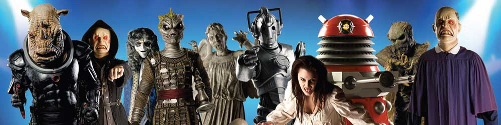
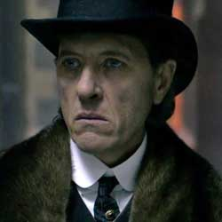

|  |
| Home | The Doctors | The Companions | The Villians | Show History |
|
|
The Great IntelligenceThe Great Intelligence is a character from the British science fiction television series Doctor Who. Although the Great Intelligence has no physical form, it is capable of communicating, both by itself and through possession, with other characters within the series. The Great Intelligence was originally created by Henry Lincoln and Mervyn Haisman and first appeared in the 1967 serial The Abominable Snowmen where he encountered the Second Doctor and his companions Jamie and Victoria. The Great Intelligence tries to form a physical body so as to conquer the Earth, making use of Yeti robots that resemble the cryptozoological creatures. Initially the Great Intelligence used the Yeti robots to scare off curiosity seekers, only later using them as an army. Both the Intelligence and the Yeti returned in its sequel The Web of Fear. After disagreements arose between Lincoln and Haisman with the BBC in 1968 over their rights to the Great Intelligence and Quarks, the writers departed from the series and both the Great Intelligence and Yeti were retired.[1]The Great Intelligence has since appeared in the 1990s Virgin Missing Adventures range of novels and the 1995 Reeltime spin-off production Downtime with the aid of its Yeti servants. The Great Intelligence returned in the 2012 Christmas Special "The Snowmen", where it is voiced by Sir Ian McKellen, which details the entity's origins. Richard E Grant assumed the role in subsequent appearances in the seventh series of the revived show. |
Brendan Davey Monica DuCong'e Erik Eyler Kayleen Garcia Katherine Hyche Ryan Moeller |
Christine O'Brien Dilman Alex Recinos Julia Schwartz Madeleine Schwartz Ann Marie Skjold Ashly Wilkins |
[Reference Links] |